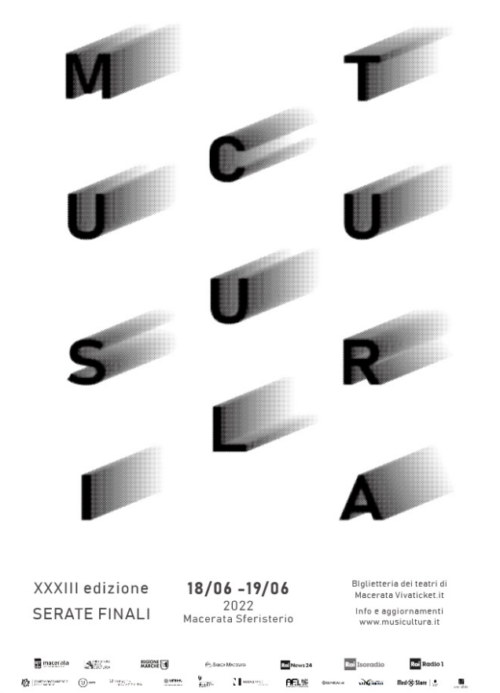
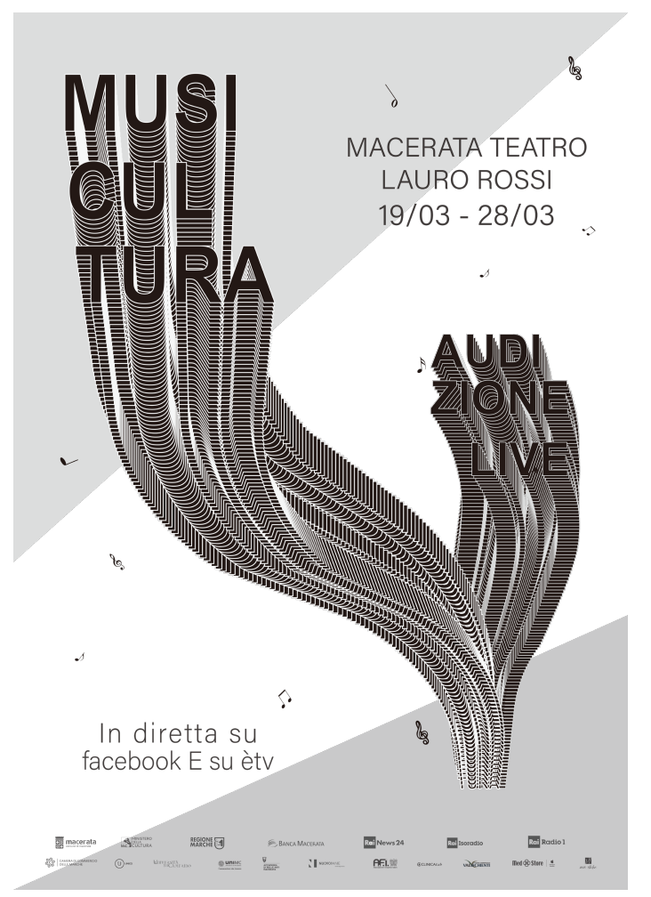
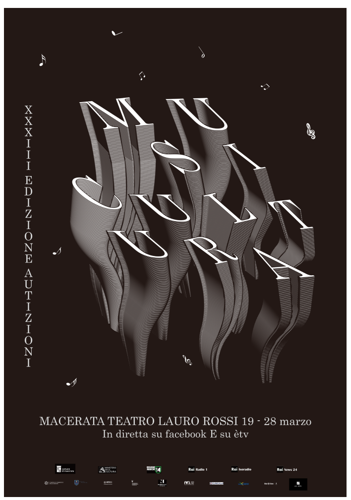
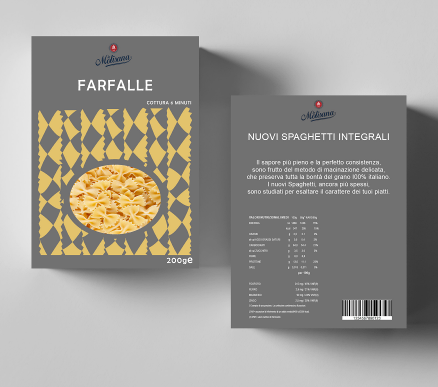
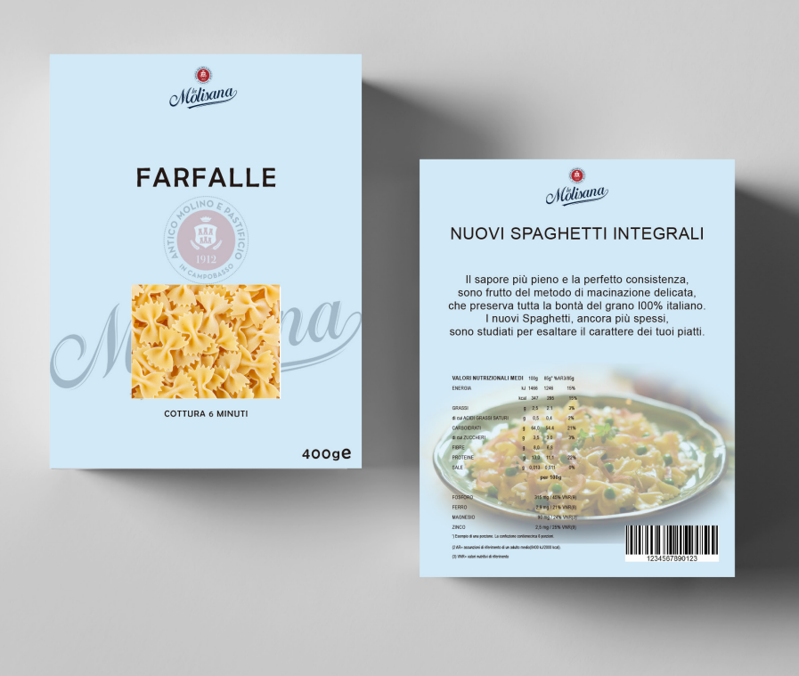
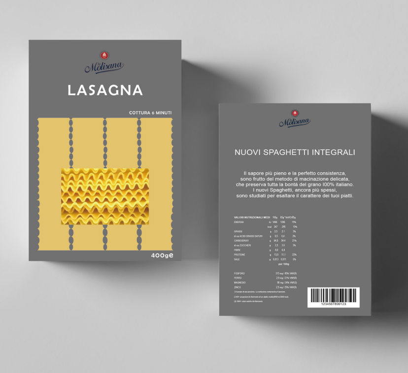
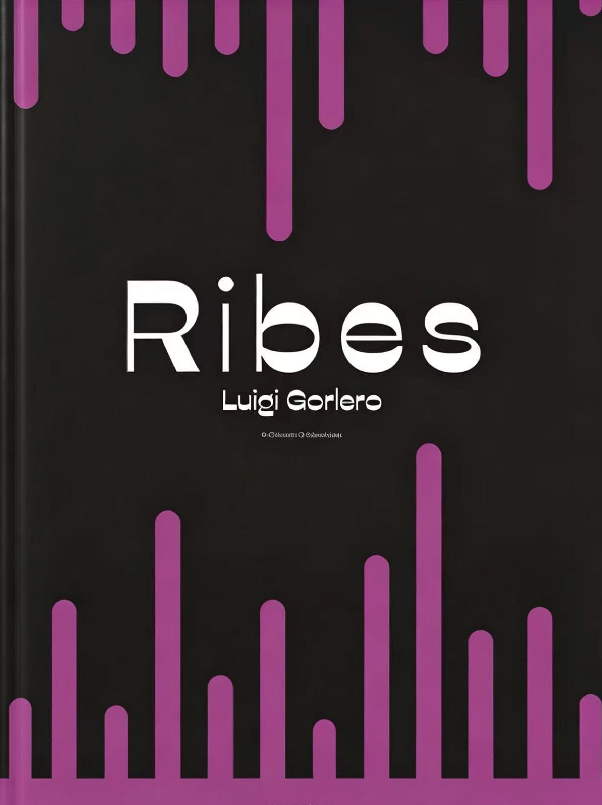
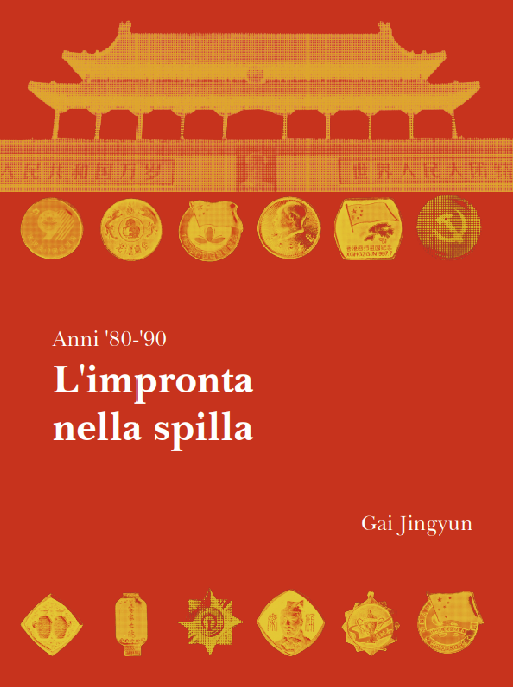
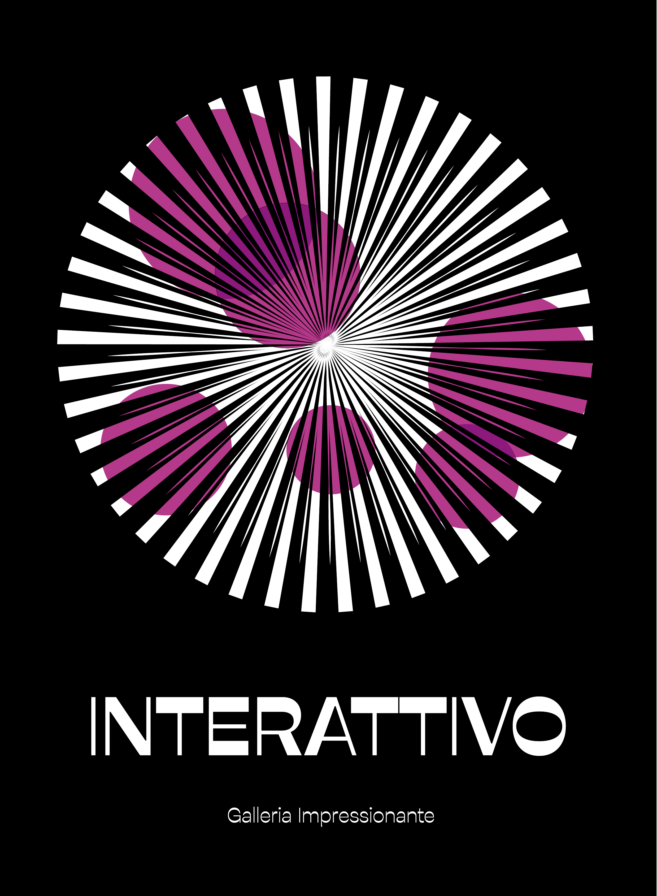

Opere
Musicultura
Musicultura è un festival musicale. Nato nel 1990 come premio Città di Recanati, cambia con la denominazione attuale nel 2005 quando si trasferisce allo Sferisterio di Macerata. Il festival è dedicato alle nuove promesse fra i cantautori della musica popolare e d'autore contemporanea. Dal 1996 è affiancato da Lunaria, manifestazione dove coppie di ospiti (uno musicale e l'altro del mondo della poesia, della letteratura e del cinema) si confrontano, discutono e intrattengono il pubblico.
Musicultura 1

Musicultura 2

Musicultura 3
Molisana
La Molisana S.p.A. è un'azienda alimentare italiana specializzata nella produzione di pasta di semola di grano duro, fondata nel 1912 a Campobasso. L'azienda produce pasta secca, semole e derivati del pomodoro ed è attiva sul mercato italiano e internazionale. Dopo un periodo di crisi nei primi anni Duemila, nel 2011 l'azienda è stata acquisita e rilanciata dalla famiglia Ferro, già operante nel settore molitorio. Nel 2026 La Molisana è il secondo marchio di pasta secca per quota di mercato in Italia e primo nella pasta integrale.
Spaghetti 1

Spaghetti 2

Spaghetti 3
Copertina
Copertina di un libro realizzata nell'ambito di un progetto da svolgere durante il corso biennale di graphic design e comunicazione visiva.
Libro 1

Libro 2
